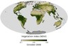

vegetation
phenomenon

Source: Wikipedia
Wikipedia Page (Something wrong with this association? Let us know.)
Wikidata Page (Something wrong with this association? Let us know.)
Occurs in:
- land_vegetation_canopy_water_interception__storage_factor
- land_vegetation_canopy_water_evaporation__volume_flux
- atmosphere_bottom_air_flowing_vegetation__log-law_roughness_length
- river-delta_plain~upper_vegetation__mean_of_height
- land_vegetation__one-year_time_max_of_leaf-area_index
- land_vegetation__leaf-area_index
- land_vegetation__reference_stomatal_resistance
- land_vegetation__time_min_of_stomatal_resistance
- land_vegetation_canopy__area_fraction
- land_vegetation_canopy_water_interception__capacity
- land_vegetation_canopy_water_interception__volume_flux
- land_vegetation_canopy_water_throughfall__volume_flux
- land_vegetation_canopy_water_transpiration__volume_flux
- land_vegetation_floor_water_interception__volume_flux
- land_surface_vegetation_water_evapotranspiration__mass_flux
- land_surface_vegetation_canopy_water__mass-per-area_density
- land_vegetation_canopy_water_evaporation__energy_flux
- land_vegetation_water_transpiration__energy_flux